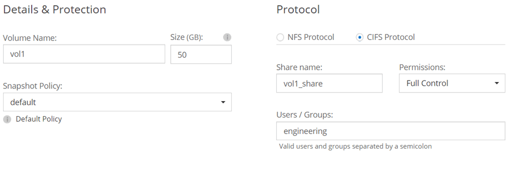

ドキュメントの変更をリクエスト
ドキュメントの変更をリクエスト GitHub で編集
GitHub で編集 寄稿者向けガイド
寄稿者向けガイドGCP での Cloud Volumes ONTAP の起動
GCP では、作業環境を作成することで、シングルノードの Cloud Volumes ONTAP システムを起動できます。
-
構成を選択し、管理者から GCP ネットワーキング情報を入手しておく必要があります。詳細については、を参照してください "Cloud Volumes ONTAP 構成を計画"。
-
BYOL システムを導入するには、ノードごとに 20 桁のシリアル番号（ライセンスキー）が必要です。
-
[[subscribe] ] 作業環境ページで、 * Cloud Volumes ONTAP の作成 * をクリックし、プロンプトに従います。
-
* 作業環境の定義 : [ 続行 *] をクリックします。
-
* Cloud Volumes ONTAP * を購読する：プロンプトが表示されたら、 GCP Marketplace で Cloud Volumes ONTAP に登録します。
次のビデオは、サブスクリプションプロセスを示しています。
-
* 詳細とクレデンシャル * ：プロジェクトを選択し、クラスタ名を指定し、必要に応じてラベルを追加して、クレデンシャルを指定します。
次の表では、ガイダンスが必要なフィールドについて説明します。
フィールド 説明 Google Cloud プロジェクト
Cloud Volumes ONTAP を配置するプロジェクトを選択します。デフォルトプロジェクトは、 Cloud Manager が配置されているプロジェクトです。
ドロップダウンリストにプロジェクトが表示されない場合は、 Cloud Manager サービスアカウントを他のプロジェクトに関連付けていません。Google Cloud コンソールに移動し、 IAM サービスを開き、プロジェクトを選択します。Cloud Manager ロールが割り当てられたサービスアカウントをそのプロジェクトに追加します。プロジェクトごとにこの手順を繰り返す必要があります。

これは Cloud Manager 用に設定するサービスアカウントです。 "このページの手順 4b で説明しているように"。 作業環境名
Cloud Manager は、作業環境名を使用して、 Cloud Volumes ONTAP システムと GCP VM インスタンスの両方に名前を付けます。また、このオプションを選択した場合は、事前定義されたセキュリティグループのプレフィックスとして名前が使用されます。
ラベルを追加します
ラベルは GCP リソースのメタデータです。Cloud Manager によって、システムに関連付けられた Cloud Volumes ONTAP システムと GCP リソースにラベルが追加されます。作業環境の作成時にユーザインターフェイスからラベルを 4 つまで追加し、その後追加することができます。API では、作業環境の作成時にラベルを 4 つに制限することはありません。ラベルの詳細については、を参照してください "Google Cloud のドキュメント：「 Labeling Resources"。
クレデンシャル
これらは、 Cloud Volumes ONTAP クラスタ管理アカウントのクレデンシャルです。このクレデンシャルを使用して、 System Manager またはその CLI から Cloud Volumes ONTAP に接続できます。
-
* 場所と接続性 * ：場所を選択し、ファイアウォールポリシーを選択して、データ階層化のための Google Cloud ストレージへのネットワーク接続を確認するチェックボックスを選択します。
コールドデータを Google Cloud Storage バケットに階層化する場合は、 Cloud Volumes ONTAP が配置されているサブネットをプライベート Google アクセス用に構成する必要があります。手順については、を参照してください "Google Cloud のドキュメント：「 Configuring Private Google Access"。
-
* ライセンスとサポートサイトのアカウント * ：従量課金制または BYOL のどちらを使用するかを指定し、 NetApp Support Site のアカウントを指定します。
ライセンスの仕組みについては、を参照してください "ライセンス"。
NetApp Support Site のアカウントは、従量課金制の場合は任意ですが、 BYOL システムの場合は必須です。 "ネットアップサポートサイトのアカウントを追加する方法について説明します"。
-
* 構成済みパッケージ * ： Cloud Volumes ONTAP システムを迅速に導入するパッケージを 1 つ選択するか、 * 独自の構成を作成 * をクリックします。
いずれかのパッケージを選択した場合は、ボリュームを指定してから、設定を確認して承認するだけで済みます。
-
* ライセンス * ：必要に応じて Cloud Volumes ONTAP のバージョンを変更し、ライセンスを選択して、仮想マシンのタイプを選択します。
システムの起動後に必要な変更があった場合は、後でライセンスまたは仮想マシンのタイプを変更できます。
選択したバージョンで新しいリリース候補、一般的な可用性、またはパッチリリースが利用可能な場合は、作業環境の作成時に Cloud Manager によってシステムがそのバージョンに更新されます。たとえば、 Cloud Volumes ONTAP 9.5 RC1 と 9.5 GA を選択した場合、更新が行われます。あるリリースから別のリリース（ 9.4 から 9.5 など）への更新は行われません。 -
* 基盤となるストレージリソース * ：初期アグリゲートの設定を選択します。ディスクタイプ、各ディスクのサイズ、データの階層化を有効にするかどうかを指定します。
ディスクタイプは初期ボリューム用です。以降のボリュームでは、別のディスクタイプを選択できます。
ディスクサイズは、最初のアグリゲート内のすべてのディスクと、シンプルプロビジョニングオプションを使用したときに Cloud Manager によって作成される追加のアグリゲートに適用されます。Advanced Allocation オプションを使用すると、異なるディスクサイズを使用するアグリゲートを作成できます。
ディスクの種類とサイズの選択については、を参照してください "GCP でシステムのサイジングを行う"。
-
* Write Speed & WORM * ：「 * Normal * 」または「 * High * write speed 」を選択し、必要に応じて Write Once 、 Read Many （ WORM ）ストレージをアクティブにします。
-
* ボリュームの作成 * ：新しいボリュームの詳細を入力するか、 * スキップ * をクリックします。
iSCSI を使用する場合は、この手順を省略してください。Cloud Manager では、 NFS および CIFS 専用のボリュームを作成できます。
このページの一部のフィールドは、説明のために用意されています。次の表では、ガイダンスが必要なフィールドについて説明します。
フィールド 説明 サイズ
入力できる最大サイズは、シンプロビジョニングを有効にするかどうかによって大きく異なります。シンプロビジョニングを有効にすると、現在使用可能な物理ストレージよりも大きいボリュームを作成できます。
アクセス制御（ NFS のみ）
エクスポートポリシーは、ボリュームにアクセスできるサブネット内のクライアントを定義します。デフォルトでは、 Cloud Manager はサブネット内のすべてのインスタンスへのアクセスを提供する値を入力します。
権限とユーザー / グループ（ CIFS のみ）
これらのフィールドを使用すると、ユーザおよびグループ（アクセスコントロールリストまたは ACL とも呼ばれる）の共有へのアクセスレベルを制御できます。ローカルまたはドメインの Windows ユーザまたはグループ、 UNIX ユーザまたはグループを指定できます。ドメインの Windows ユーザ名を指定する場合は、 domain\username 形式でユーザのドメインを指定する必要があります。
スナップショットポリシー
Snapshot コピーポリシーは、自動的に作成される NetApp Snapshot コピーの頻度と数を指定します。NetApp Snapshot コピーは、パフォーマンスに影響を与えず、ストレージを最小限に抑えるポイントインタイムファイルシステムイメージです。デフォルトポリシーを選択することも、なしを選択することもできます。一時データには、 Microsoft SQL Server の tempdb など、 none を選択することもできます。
次の図は、 CIFS プロトコルの [Volume] ページの設定を示しています。

-
* CIFS セットアップ * ： CIFS プロトコルを選択した場合は、 CIFS サーバをセットアップします。
フィールド 説明 DNS プライマリおよびセカンダリ IP アドレス
CIFS サーバの名前解決を提供する DNS サーバの IP アドレス。リストされた DNS サーバには、 CIFS サーバが参加するドメインの Active Directory LDAP サーバとドメインコントローラの検索に必要なサービスロケーションレコード（ SRV ）が含まれている必要があります。
参加する Active Directory ドメイン
CIFS サーバを参加させる Active Directory （ AD ）ドメインの FQDN 。
ドメインへの参加を許可されたクレデンシャル
AD ドメイン内の指定した組織単位（ OU ）にコンピュータを追加するための十分な権限を持つ Windows アカウントの名前とパスワード。
CIFS サーバの NetBIOS 名
AD ドメイン内で一意の CIFS サーバ名。
組織単位
CIFS サーバに関連付ける AD ドメイン内の組織単位。デフォルトは CN=Computers です。
DNS ドメイン
Cloud Volumes ONTAP Storage Virtual Machine （ SVM ）の DNS ドメイン。ほとんどの場合、ドメインは AD ドメインと同じです。
NTP サーバ
Active Directory DNS を使用して NTP サーバを設定するには、「 Active Directory ドメインを使用」を選択します。別のアドレスを使用して NTP サーバを設定する必要がある場合は、 API を使用してください。を参照してください "Cloud Manager API 開発者ガイド" を参照してください。
-
* 使用状況プロファイル、ディスクタイプ、階層化ポリシー * ：必要に応じて、 Storage Efficiency 機能を有効にして階層化ポリシーを変更するかどうかを選択します。
詳細については、を参照してください "ボリューム使用率プロファイルについて" および 。
-
* データ階層化用 Google Cloud Platform アカウント * ： Google Cloud Platform アカウントに相互運用可能なストレージアクセスキーを提供して、データ階層化を設定します。データ階層化を無効にするには、 * Skip * をクリックします。
これらのキーを使用して、 Cloud Manager でデータ階層化用の Cloud Storage バケットを設定できます。詳細については、を参照してください "GCP アカウントのセットアップと Cloud Manager への追加"。
-
* レビューと承認 *: 選択内容を確認して確認します。
-
設定の詳細を確認します。
-
[ 詳細情報 * （ More information * ） ] をクリックして、 Cloud Manager が購入するサポートと GCP リソースの詳細を確認します。
-
[* I understand … * （理解しています … * ） ] チェックボックスを選択
-
[Go*] をクリックします。
-
Cloud Manager は Cloud Volumes ONTAP システムを導入します。タイムラインで進行状況を追跡できます。
Cloud Volumes ONTAP システムの導入で問題が発生した場合は、障害メッセージを確認してください。作業環境を選択し、 * 環境の再作成 * をクリックすることもできます。
詳細については、を参照してください "NetApp Cloud Volumes ONTAP のサポート"。
-
CIFS 共有をプロビジョニングした場合は、ファイルとフォルダに対する権限をユーザまたはグループに付与し、それらのユーザが共有にアクセスしてファイルを作成できることを確認します。
-
ボリュームにクォータを適用する場合は、 System Manager または CLI を使用します。
クォータを使用すると、ユーザ、グループ、または qtree が使用するディスク・スペースとファイル数を制限または追跡できます。